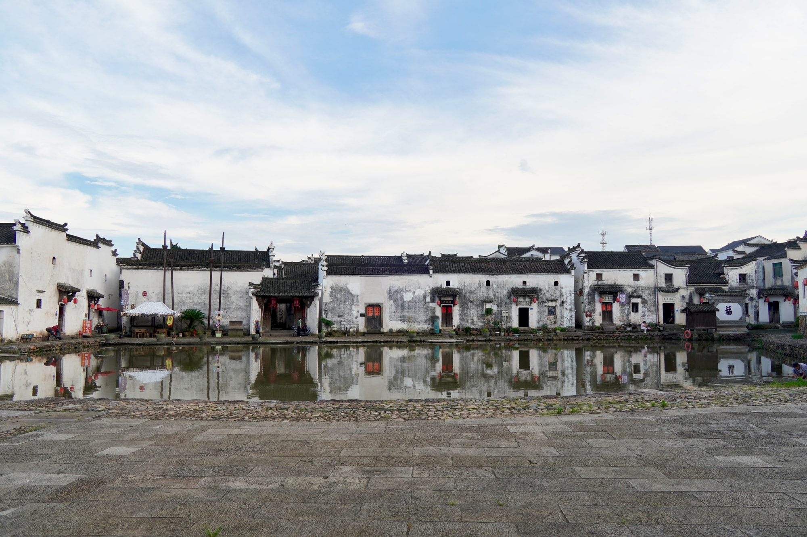
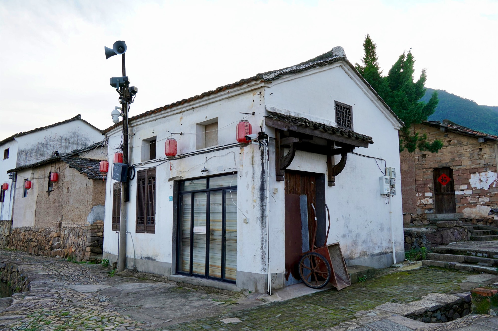
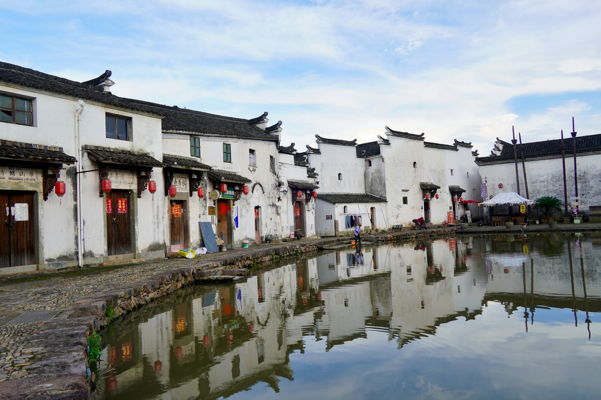

国保村落水域景观·门台
道峰山下的消灾之塘门台与南塘景观
门台与南塘同处新叶村的入口一带。南塘是村中最大的水塘，也是一处风水池塘；穿过村口的门台，最先映入眼帘的往往就是这片开阔的水面。
01
为消灾而凿的大塘

新叶村正对着形如“火”的道峰山，山体雄厚高大，先民认为村庄火气过旺，必须有一处足够大的水塘才能消灾。于是开凿南塘，以水制火，庇佑整个村庄。南塘因此不只是一片景致，更是新叶人依五行观念安排村庄格局时，郑重设下的一环。
02
环塘而居

玉华叶氏总祠有序堂坐南朝北，正对道峰山，堂前所设的正是这片南塘。村中住宅集中建在南塘的南、西、东三面，隔水与祠堂相望。祠堂、民居与水面由此形成彼此照应的村落格局，南塘也成为古村入口最醒目的公共空间。
03
村口的门台

门台立于村落入口一带，是新叶村乡土建筑中的一处独立文物点。它与南塘一水相邻，共同构成进入古村时最先经过的空间序列：门台收束入口，南塘随即展开开阔水面，一收一放之间，古村的水乡气象也随之显现。